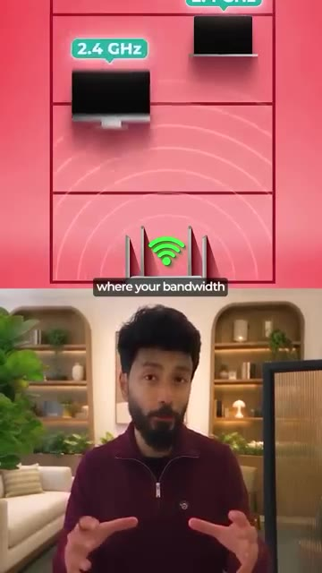
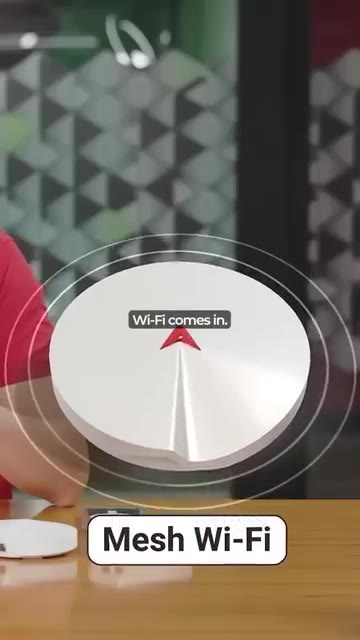
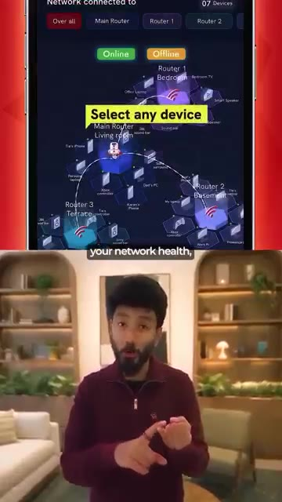
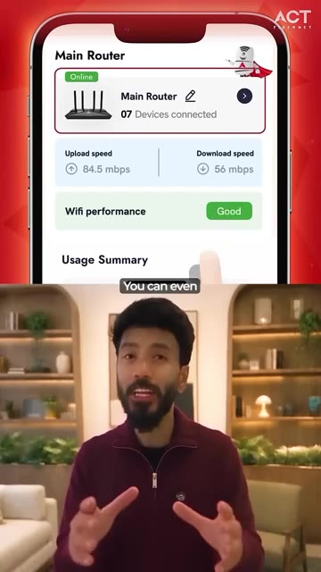
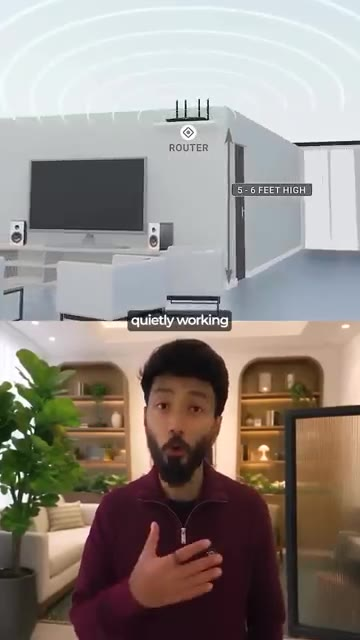
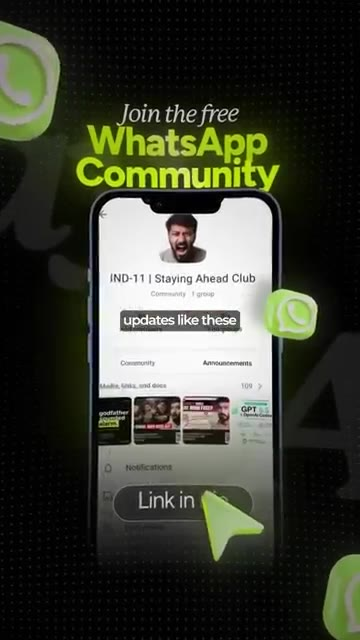

Pendant des années, le Wi-Fi servait uniquement à obtenir un Internet plus rapide. Aujourd'hui, une entreprise indienne essaie de le rendre plus intelligent en y intégrant de l'intelligence artificielle. Voici les actualités. Nous blâmons généralement Internet pour la lenteur du Wi-Fi. Mais le problème peut en réalité venir de ce qui se passe chez vous. Quelqu'un joue à des jeux vidéo, quelqu'un est en appel vidéo, la télévision diffuse en streaming dans le salon, et soudain tout ralentit.
Interface & Outils : AUCUNE
Contenu textuel & Code : Texte à l'écran : "is trying" puis "We usually blame slow WI-FI Error" et "Someone's gaming".
Action / Démonstration : Présentation introductive d'un sujet technologique avec des animations graphiques explicatives.
Mais Internet allait probablement bien. La vraie bataille se jouait à l'intérieur de chez vous. Tous vos appareils connectés à la même connexion en même temps, avec quelques murs au milieu, et le signal qui a du mal à atteindre la pièce d'à côté. C'est là que ACT Smart Wi-Fi devient intéressant. Il est doté d'un cerveau d'intelligence artificielle appelé ACT Zippy, qui fonctionne en arrière-plan 24h/24 et 7j/7. Considérez Zippy comme un agent de circulation intelligent pour votre Wi-Fi.
Interface & Outils : Publicité animée pour ACT Fibernet
Contenu textuel & Code : Texte promotionnel 'ACT Zippy is here with great advice, for a great Wi-Fi connection.' et hashtag '#BreakFreeWithZippy'
Action / Démonstration : Présentation publicitaire d'un service Wi-Fi avec un personnage mascotté animé.
Il surveille constamment votre réseau, optimise automatiquement la connexion, gère la répartition de votre bande passante, et peut même résoudre certains problèmes de signal avant que vous ne les remarquiez. Ainsi, au lieu d'aller vers votre routeur chaque fois que quelque chose ne va pas, votre Wi-Fi essaie fondamentalement de se débrouiller tout seul. C'est là que le Wi-Fi maillé entre en jeu. Au lieu d'un seul routeur qui crie depuis un coin, le signal se propage dans toute votre maison.
Interface & Outils : Animation graphique de réseau et dispositif matériel Mesh Wi-Fi
Contenu textuel & Code : Schéma explicatif de routeur avec fréquences (2.4 GHz) et texte "Mesh Wi-Fi"
Action / Démonstration : Explication visuelle et démonstration matérielle du fonctionnement d'un routeur Mesh Wi-Fi et de la gestion de bande passante

🔍 Agrandir
🔍 AgrandirAinsi, vos jeux n'ont pas à rivaliser avec votre téléviseur 4K. Votre appel professionnel n'a pas à rivaliser avec les appareils de tout le monde. Et vos objets connectés peuvent également rester connectés. Et vous pouvez réellement voir ce qui se passe grâce à l'application ACT. Vous pouvez vérifier l'état de santé de votre réseau, voir chaque appareil connecté sur la carte des appareils et obtenir des analyses d'utilisation pour chaque appareil individuel. Vous pouvez même gérer des choses comme l'accès des appareils et définir des périodes spécifiques pendant lesquelles un appareil peut ou ne peut pas utiliser le Wi-Fi.
Interface & Outils : Application mobile ACT
Contenu textuel & Code : Vitesse d'upload (84.5 mbps), vitesse de download (56 mbps), performance Wi-Fi ("Good"), nombre d'appareils connectés.
Action / Démonstration : Le présentateur explique les fonctionnalités de l'application mobile en montrant des captures d'écran de l'interface de gestion du réseau.

🔍 Agrandir
🔍 AgrandirC'est ce qui rend cela intéressant pour moi. Ce n'est pas de l'intelligence artificielle pour le simple fait de faire de l'intelligence artificielle. C'est de l'intelligence artificielle qui travaille discrètement en arrière-plan pour vous offrir une meilleure expérience Wi-Fi à la maison. Et le meilleur, c'est que si vous êtes un utilisateur nouveau ou existant d'ACT Fibernet, la mise à niveau est gratuite, sans tracas d'installation supplémentaire. Un Wi-Fi plus rapide, plus puissant et plus intelligent propulsé par l'intelligence artificielle.
Interface & Outils : AUCUNE
Contenu textuel & Code : Sous-titres textuels ("quietly working", "If you are a new", "extra installation hassle") et animation 3D illustrant la portée du signal d'un routeur Wi-Fi.
Action / Démonstration : Présentation orale avec support visuel animé illustrant l'emplacement du routeur Wi-Fi à la maison.

🔍 AgrandirJe partage des mises à jour comme celles-ci dans ma communauté WhatsApp. Lien dans la bio.
Interface & Outils : Application WhatsApp (interface mobile)
Contenu textuel & Code : Texte "Join the free WhatsApp Community" et "IND-11 | Staying Ahead Club" avec des aperçus de médias partagés et un bouton cliquable "Link in bio".
Action / Démonstration : Incitation à rejoindre la communauté WhatsApp via le lien indiqué.

🔍 Agrandir